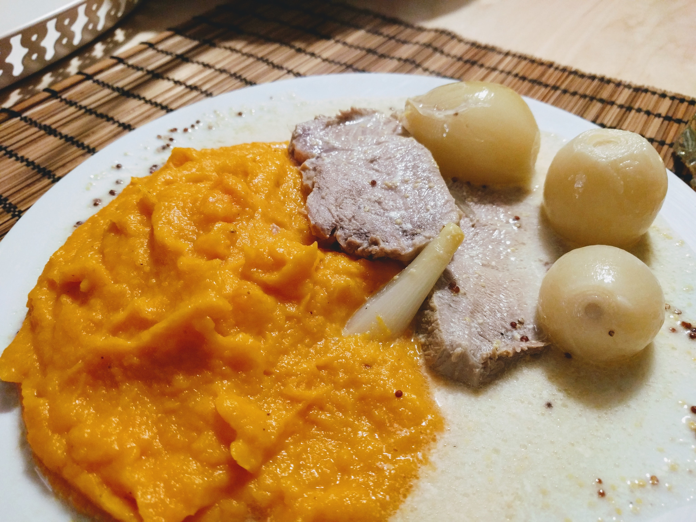

Mijoté de porc de Dijon

Ici avec une [purée de carottes](PureeDeCarottes.html)
Pour 5 personnes environ :
- Un rôti de porc d'environ 600g
- 3 grosses gousses d'ail (ou 4 petites)
- Moutarde de Dijon (à l'ancienne, c'est mieux, mais au pire c'est pas grave)
- 10 petites échalotes
- Crème (épaisse)
- Deux graisses différentes parmi beurre, huile d'olive, margarine, saindoux
- Sel, poivre
- Piquer le rôti un peu partout avec des morceaux d'ail, et faire chauffer la graisse dans une cocotte pendant ce temps.
- Le faire dorer sur toutes les faces dans la graisse chaude. Saler, poivrer.
- Lorsqu'il a pris une jolie couleur, le sortir de la cocotte et le badigeonner généreusement de moutarde.
- Le remettre à cuire avec les échalotes entières. Couvrir aux 2/3 d'eau, laisser mijoter à feu doux à partir des premiers bouillons, un peu plus d'une heure
- Au bout d'une 1h-1h30, retirer rôti et échalotes, rectifier la sauce si nécessaire (sel et poivre), rajouter de la crème fraîche.
- Couper le rôti en tranches, servir nappé de sauce avec les échalotes entières.
Retour à la liste des recettes